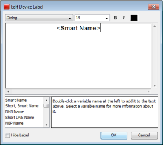
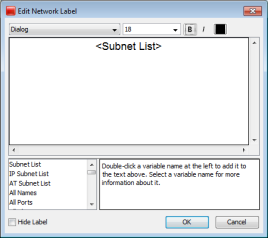

Use the Label... command, available from the Format menu (Cmd/Ctrl-L) to edit the labels for the selected map objects. You can edit the label for a single device or network from the Device or Network Info window.
Every item on a map has its own descriptive label. InterMapper creates a default label showing the device's full DNS name or IP address(es).
To edit a map object's label:
For example, the device in the Edit Device Label window uses the short, smart name (the leftmost part of the full domain name). The network shown in the Edit Network Label window has a static (unchanging) label of "Our ISP", and a list of all the subnets in the network shown on the next line.
Note: You can also use InterMapper variables and Javascript to insert information dynamically into a device label. For more information, see Dynamic Label & Alert Text{}.
|
 The Edit Device Label window |
 The Edit Network Label window |
In some cases you may not want a label to show at all.
You can hide the label for any device or network unless the icon is set to:
To hide the label for a device or network: